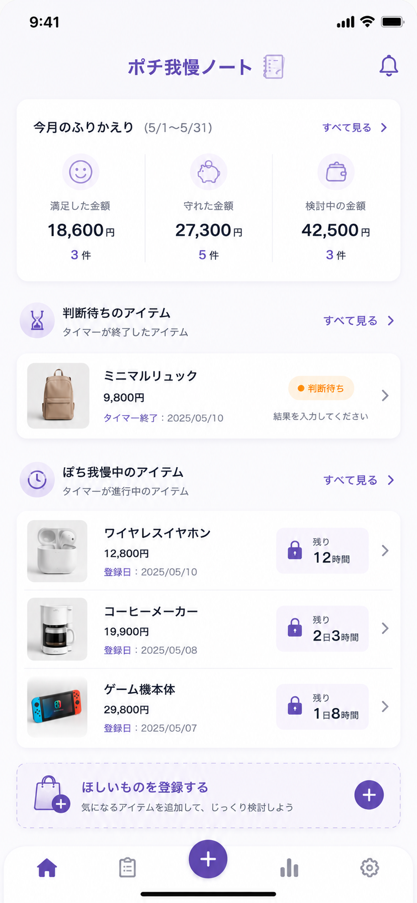
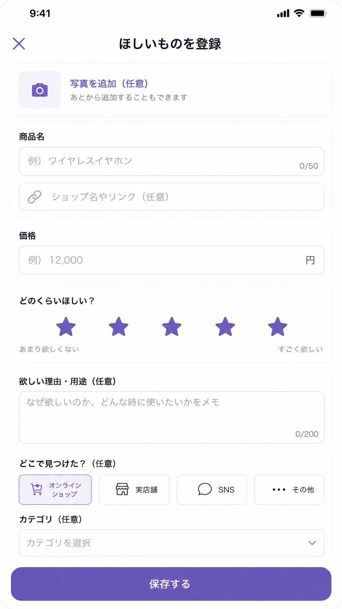
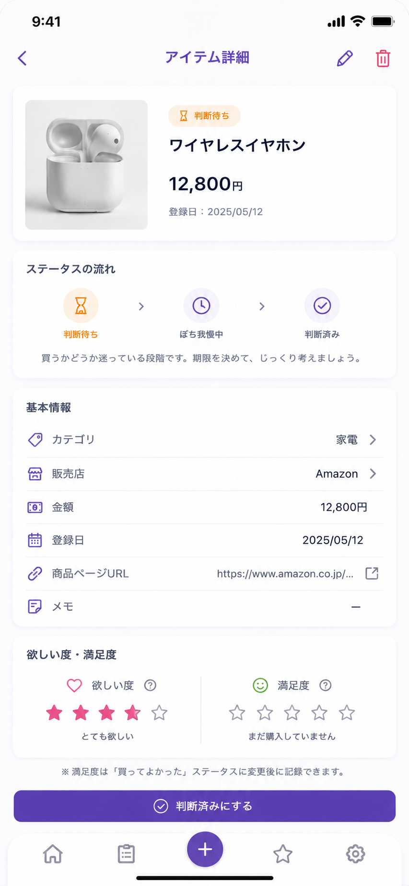
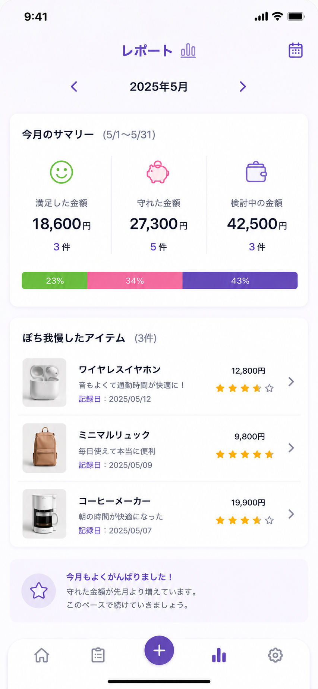

欲しい物をすぐ登録
商品名、価格、画像、URL、欲しい度、理由タグを記録。共有シートからの登録にも対応予定です。
欲しい物を買う前に一度冷静になって購入判断をし、購入後の満足度を記録。衝動買いを減らしながら、自分にとって本当に満足できるお金の使い方を見つけるアプリです。

すべてのお買い物に満足を
「欲しい」と思った瞬間に購入せずに時間をあけて冷静に判断します。購入したものは満足度を記録することで自分にとって必要だったかを記録します。家計簿が続かない人でも、購入前後の判断だけに絞って自分の傾向を見つけられるように設計しています。
商品名、価格、画像、URL、欲しい度、理由タグを記録。共有シートからの登録にも対応予定です。
登録後はぽち待ちタイマーを開始。翌日に「まだ欲しいですか？」とやさしく再確認します。
購入した商品は7日後に振り返り。期待と実際の満足度のズレを、次の買い物判断に活かせます。
満足した金額、守れた金額、買ってよかった率を表示。自分だけの買い物ルールを育てます。
商品情報と「なぜ欲しいか」を登録します。
その場で買わず、少し時間を置いて気持ちを見直します。
購入する、見送る、再検討するから選びます。
買ってよかったか、使ったか、期待通りだったかを記録します。



MVPではアカウントやサーバー同期を持たず、入力データは端末内保存を基本にしています。
商品名、価格、メモ、画像、URLなどの入力内容は、アプリの機能提供のため端末内に保存されます。
Firebase Analyticsで匿名の利用状況イベントを取得する場合がありますが、商品名やメモなどの具体的な入力内容は送信しません。
プライバシーポリシーを見る 利用規約を見る